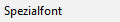
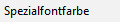
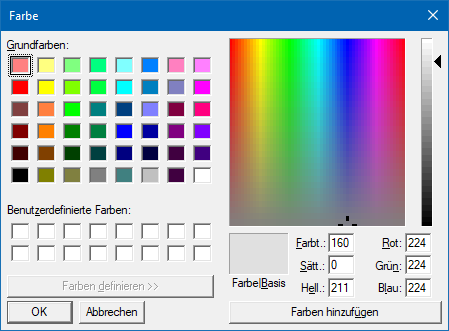
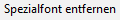

Mit Hilfe der rechten Maustaste kann pro Text bzw. %s-, ###- oder Formel-Variable ein Spezialfont zugewiesen bzw. wieder entfernt werden.
Ø

SpezialfontDurch Anwahl dieses Eintrags wird das Fenster "Schriftart" geöffnet. In diesem kann dem Text bzw. der Variable eine Schriftart, samt Schriftschnitt, Schriftgrad, Effekt und Farbe zugewiesen werden. Hierbei steht alle auf dem Arbeitsplatz installierte Fonts zur Verfügung.
Hinweis
Bei der Aktivierung des Spezialfonts wird im ersten Schritt der aktuelle WinLine-Font als Spezialfont vorgeschlagen.
Eigenschaftsfenster "Schriftart"

Ø

SpezialfontfarbeSobald ein Spezialfont definiert wurde, steht diese Funktion zur Verfügung. Bei Anwahl wird das Fenster "Farbe" geöffnet, in welchem die Farbe individuell designed werden kann.
Eigenschaftsfenster "Farbe"

Ø

Spezialfont entfernenSobald ein Spezialfont zugewiesen wurde, steht die Funktion "Spezialfont entfernen" zur Verfügung. Hierüber wird der gewählte Font entfernt.